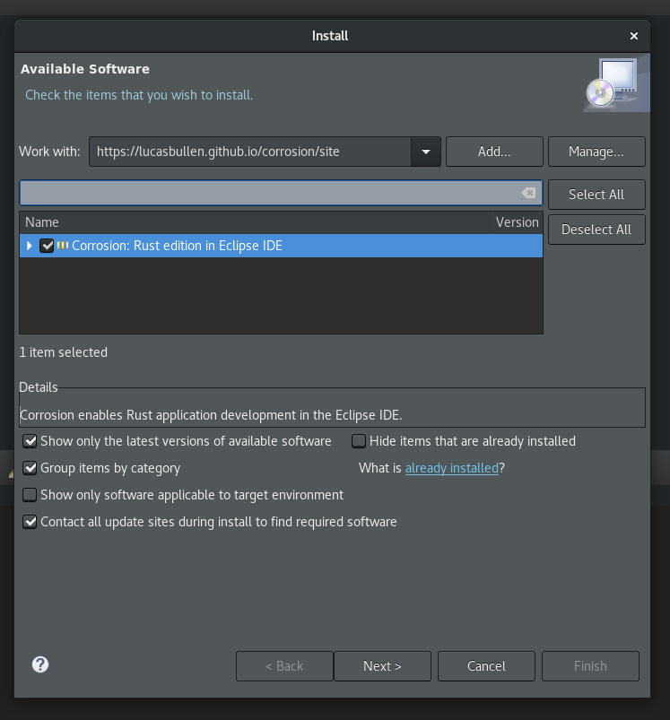

- Open Eclipse IDE (Download)
- Open the Install New Software Wizard
- Enter https://lucasbullen.github.io/redOx/site/ in the site field
- Select RedOx - Rust in Eclipse IDE and click Next 
- Wait for the dependencies to load
- Press Next again
- Accept the license and press Finish
- Restart Eclipse
- Start developing your Rust projects in Eclipse IDE!
- Make requests and PRs for new features and bug fixes
- Learn more about RedOx